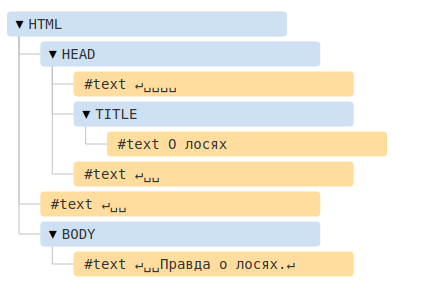
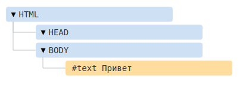
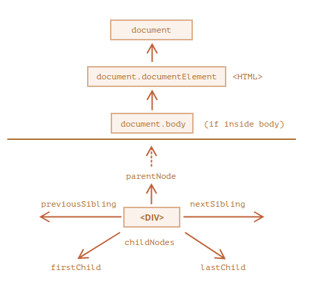
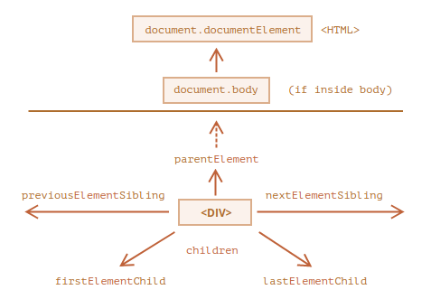

Зачастую нам надо повторять одно и то же действие во многих частях программы. Например, необходимо красиво вывести сообщение при приветствии посетителя, при выходе посетителя с сайта, ещё где-нибудь. Чтобы не повторять один и тот же код во многих местах, придуманы функции. Функции являются основными «строительными блоками» программы.
Примеры встроенных функций вы уже видели – это alert(message), prompt(message, default) и confirm(question). Но можно создавать и свои.
Для создания функций мы можем использовать объявление функции.
Пример объявления функции:
function showMessage() {
alert( 'Всем привет!' );
}
Вначале идёт ключевое слово function, после него имя функции, затем список параметров в круглых скобках через запятую
(в вышеприведённом примере он пустой) и, наконец, код функции, также называемый «телом функции», внутри фигурных скобок.
function имя(параметры) {
...тело...
}
Наша новая функция может быть вызвана по её имени: showMessage().
function showMessage() {
alert( 'Всем привет!' );
}
showMessage();
showMessage();
Вызов showMessage() выполняет код функции. Здесь мы увидим сообщение дважды.
Переменные, объявленные внутри функции, видны только внутри этой функции.
Например:
function showMessage() {
let message = "Привет, я JavaScript!"; // локальная переменная
alert( message );
}
showMessage(); // Привет, я JavaScript!
alert( message ); // будет ошибка, т.к. переменная видна только внутри функции
У функции есть доступ к внешним переменным, например:
let userName = 'Вася';
function showMessage() {
let message = 'Привет, ' + userName;
alert(message);
}
showMessage(); // Привет, Вася
Функция обладает полным доступом к внешним переменным и может изменять их значение.
let userName = 'Вася';
function showMessage() {
userName = "Петя"; // (1) изменяем значение внешней переменной
let message = 'Привет, ' + userName;
alert(message);
}
alert( userName ); // Вася перед вызовом функции
showMessage();
alert( userName ); // Петя, значение внешней переменной было изменено функцией
Внешняя переменная используется, только если внутри функции нет такой локальной.
let userName = 'Вася';
function showMessage() {
let userName = "Петя"; // объявляем локальную переменную
let message = 'Привет, ' + userName; // Петя
alert(message);
}
// функция создаст и будет использовать свою собственную локальную переменную userName
showMessage();
alert( userName ); // Вася, не изменилась, функция не трогала внешнюю переменную
Мы можем передать внутрь функции любую информацию, используя параметры (также называемые аргументами функции).
В нижеприведённом примере функции передаются два параметра: from и text.
function showMessage(from, text) { // аргументы: from, text
alert(from + ': ' + text);
}
showMessage('Аня', 'Привет!'); // Аня: Привет! (*)
showMessage('Аня', "Как дела?"); // Аня: Как дела? (**)
Когда функция вызывается в строках (*) и (**), переданные значения копируются в локальные переменные from и text.
Затем они используются в теле функции.
function showMessage(from, text) {
from = '*' + from + '*'; // немного украсим "from"
alert( from + ': ' + text );
}
let from = "Аня";
showMessage(from, "Привет"); // *Аня*: Привет
// значение "from" осталось прежним, функция изменила значение локальной переменной
alert( from ); // Аня
Если параметр не указан, то его значением становится undefined.
Например, вышеупомянутая функция showMessage(from, text) может быть вызвана с одним аргументом:
showMessage("Аня");
Это не приведёт к ошибке. Такой вызов выведет "Аня: undefined". В вызове не указан параметр text, поэтому предполагается,
что text === undefined.
function showMessage(from, text = "текст не добавлен") {
alert( from + ": " + text );
}
showMessage("Аня"); // Аня: текст не добавлен
Теперь, если параметр text не указан, его значением будет "текст не добавлен"
function showMessage(from, text = anotherFunction()) {
// anotherFunction() выполнится только если не передан text
// результатом будет значение text
}
Функция может вернуть результат, который будет передан в вызвавший её код.
Простейшим примером может служить функция сложения двух чисел:
function sum(a, b) {
return a + b;
}
let result = sum(1, 2);
alert( result ); // 3
Директива return может находиться в любом месте тела функции. Как только выполнение доходит до этого места,
функция останавливается, и значение возвращается в вызвавший её код (присваивается переменной result выше).
function checkAge(age) {
if (age > 18) {
return true;
} else {
return confirm('А родители разрешили?');
}
}
let age = prompt('Сколько вам лет?', 18);
if ( checkAge(age) ) {
alert( 'Доступ получен' );
} else {
alert( 'Доступ закрыт' );
}
Возможно использовать return и без значения. Это приведёт к немедленному выходу из функции.
function showMovie(age) {
if ( !checkAge(age) ) {
return;
}
alert( "Вам показывается кино" ); // (*)
// ...
}
В коде выше, если checkAge(age) вернёт false, showMovie не выполнит alert.
Результат функции с пустым return или без него – undefined
Если функция не возвращает значения, это всё равно, как если бы она возвращала undefined:
function doNothing() { /* пусто */ }
alert( doNothing() === undefined ); // true
Пустой return аналогичен return undefined:
function doNothing() {
return;
}
alert( doNothing() === undefined ); // true
Никогда не добавляйте перевод строки между return и его значением
Для длинного выражения в return может быть заманчиво разместить его на нескольких отдельных строках, например так:
return
(some + long + expression + or + whatever * f(a) + f(b))
Код не выполнится, потому что интерпретатор JavaScript подставит точку с запятой после return. Для него это будет выглядеть так:
return;
(some + long + expression + or + whatever * f(a) + f(b))
Таким образом, это фактически стало пустым return.
return (
some + long + expression
+ or +
whatever * f(a) + f(b)
)
И тогда всё сработает, как задумано.
Функция – это действие. Поэтому имя функции обычно является глаголом. Оно должно быть простым, точным и
описывать действие функции, чтобы программист, который будет читать код, получил верное представление о том,
что делает функция.
Как правило, используются глагольные префиксы, обозначающие общий характер действия, после которых следует уточнение.
Обычно в командах разработчиков действуют соглашения, касающиеся значений этих префиксов.
Например, функции, начинающиеся с "show" обычно что-то показывают.
showMessage(..) // показывает сообщение
getAge(..) // возвращает возраст (в каком-либо значении)
calcSum(..) // вычисляет сумму и возвращает результат
createForm(..) // создаёт форму (и обычно возвращает её)
checkPermission(..) // проверяет доступ, возвращая true/false
Благодаря префиксам, при первом взгляде на имя функции становится понятным что делает её код, и какое значение она может возвращать.
Одна функция – одно действие
Функция должна делать только то, что явно подразумевается её названием. И это должно быть одним действием.
Два независимых действия обычно подразумевают две функции, даже если предполагается, что они будут вызываться
вместе (в этом случае мы можем создать третью функцию, которая будет их вызывать).
Сверхкороткие имена функций
Имена функций, которые используются очень часто, иногда делают сверхкороткими.
Например, во фреймворке jQuery есть функция с именем $. В библиотеке Lodash основная функция представлена именем _.
Это исключения. В основном имена функций должны быть в меру краткими и описательными.
Функции должны быть короткими и делать только что-то одно. Если это что-то большое, имеет смысл разбить функцию на несколько меньших.
Иногда следовать этому правилу непросто, но это определённо хорошее правило.
Небольшие функции не только облегчают тестирование и отладку – само существование таких функций выполняет роль хороших комментариев!
Основой HTML-документа являются теги.
В соответствии с объектной моделью документа («Document Object Model», коротко DOM), каждый HTML-тег является объектом.
Вложенные теги являются «детьми» родительского элемента. Текст, который находится внутри тега, также является объектом.
Все эти объекты доступны при помощи JavaScript, мы можем использовать их для изменения страницы.
Например, document.body – объект для тега <body>.
Если запустить этот код, то <body> станет красным на 3 секунды:
document.body.style.background = 'red'; // сделать фон красным
setTimeout(() => document.body.style.background = '', 3000); // вернуть назад
Это был лишь небольшой пример того, что может DOM.
Начнём с такого, простого, документа:
<!DOCTYPE HTML>
<html>
<head>
<title>О лосях</title>
</head>
<body>
Правда о лосях.
</body>
</html>
DOM – это представление HTML-документа в виде дерева тегов. Вот как оно выглядит:

Пробелы и переводы строки – это полноправные символы, как буквы и цифры. Они образуют текстовые узлы и становятся
частью дерева DOM. Так, в примере выше в теге <head> есть несколько пробелов перед <title>, которые
образуют текстовый узел #text (он содержит в себе только перенос строки и несколько пробелов).
Если браузер сталкивается с некорректно написанным HTML-кодом, он автоматически корректирует его при построении DOM.
Например, в начале документа всегда должен быть тег <html>. Даже если его нет в документе – он будет в дереве DOM,
браузер его создаст. То же самое касается и тега <body>.
Например, если HTML-файл состоит из единственного слова "Привет", браузер обернёт его в теги <html> и <body>,
добавит необходимый тег <head>, и DOM будет выглядеть так:

Возвращает ссылку на элемент по его идентификатору (ID);
идентификатор является строкой, которая может быть использована для идентификации элемента;
она может быть определена при помощи атрибута id в HTML или из скрипта.
Синтаксис
element = document.getElementById(id);
Параметры:
<!DOCTYPE html>
<html>
<head>
<title>getElementById example</title>
<script>
function changeColor(newColor) {
var elem = document.getElementById("para1");
elem.style.color = newColor;
}
</script>
</head>
<body>
<p id="para1">Some text here</p>
<button onclick="changeColor('blue');">blue</button>
<button onclick="changeColor('red');">red</button>
</body>
</html>
Возвращает массивоподобный (итерируемый) объект всех дочерних элементов, соответствующих всем из указанных
имён классов. В случае вызова по отношению к объекту 'document', поиск происходит по всему документу, включая
корневой элемент. Вызывать getElementsByClassName() можно также применительно к любому элементу: возвращены будут
лишь те элементы, которые являются потомками указанного корневого элемента и имеют при этом указанные классы.
Синтаксис
var elements = document.getElementsByClassName(names); // или:
var elements = rootElement.getElementsByClassName(names);
document.getElementsByClassName('test');
Получить все элементы, для которых заданы класс 'red' и класс 'test':
document.getElementsByClassName('red test');
Получить все элементы класса 'test', являющиеся дочерними для элемента с ID 'main':
document.getElementById('main').getElementsByClassName('test');
Element.getElementsByTagName() метод возвращает живую коллекцию элементов HTMLCollection, учитывая имя тэга.
Поиск осуществляется в поддереве указанного элемента, в результат поиска не попадает сам элемент, в поддереве
которого осуществлялся поиск. Возвращает живой список, который автоматически обновляется при изменении DOM. Поэтому
не нужно вызывать метод Element.getElementsByTagName() несколько раз с одними и теми же аргументами, содержимое списка
обновляется автоматически.
Синтаксис
elements = element.getElementsByTagName(tagName);
Пример
// check the alignment on a number of cells in a table.
var table = document.getElementById("forecast-table");
var cells = table.getElementsByTagName("td");
for (var i = 0; i < cells.length; i++) {
var status = cells[i].getAttribute("data-status");
if ( status == "open" ) {
// grab the data
}
}
Свойство интерфейса Element innerHTML устанавливает или получает HTML или XML разметку дочерних элементов.
Синтаксис
Этот пример использует innerHTML для создания механизма логирования сообщений внутри элемента на странице.
const content = element.innerHTML;
element.innerHTML = htmlString;
Пример
function log(msg) {
var logElem = document.querySelector(".log");
var time = new Date();
var timeStr = time.toLocaleTimeString();
logElem.innerHTML += timeStr + ": " + msg + "&nbbr/>";
}
log("Регистрация событий мыши внутри этого контейнера...");
function logEvent(event) {
var msg = "Event <strong>" + event.type + "</strong> at <em>" +
event.clientX + ", " + event.clientY + "</em>";
log(msg);
}
var boxElem = document.querySelector(".box");
boxElem.addEventListener("mousedown", logEvent);
boxElem.addEventListener("mouseup", logEvent);
boxElem.addEventListener("click", logEvent);
boxElem.addEventListener("mouseenter", logEvent);
boxElem.addEventListener("mouseleave", logEvent);
DOM позволяет нам делать что угодно с элементами и их содержимым, но для начала нужно получить соответствующий DOM-объект.
Все операции с DOM начинаются с объекта document. Это главная «точка входа» в DOM. Из него мы можем получить доступ к любому узлу.
Так выглядят основные ссылки, по которым можно переходить между узлами DOM:

Самые верхние элементы дерева доступны как свойства объекта document:
<html> = document.documentElement
Самый верхний узел документа: document.documentElement. В DOM он соответствует тегу <html>.
<body> = document.body
Другой часто используемый DOM-узел – узел тега <body>: document.body.
<head> = document.head
Тег <head> доступен как document.head.
Есть одна тонкость: document.body может быть равен null
Нельзя получить доступ к элементу, которого ещё не существует в момент выполнения скрипта.
В частности, если скрипт находится в <head>, document.body в нём недоступен, потому что браузер
его ещё не прочитал.
Поэтому, в примере ниже первый alert выведет null:
<html>
<head>
<script>
alert( "Из HEAD: " + document.body ); // null, <body> ещё нет
</script>
</head>
<body>
<script>
alert( "Из BODY: " + document.body ); // HTMLBodyElement, теперь он есть
</script>
</body>
</html>
В мире DOM null означает «не существует» Здесь и далее мы будем использовать два принципиально разных термина:
<html>
<body>
<div>Начало</div>
<ul>
<li>
<b>Информация</b>
</li>
</ul>
</body>
</html>
…А потомки <body>– это и прямые дети <div>, <ul> и вложенные в них: <li> (потомок <ul>) и <b> (потомок <li>)
– в общем, все элементы поддерева.
<html>
<body>
<div>Начало</div>
<ul>
<li>Информация</li>
</ul>
<div>Конец</div>
<script>
for (let i = 0; i < document.body.childNodes.length; i++) {
alert( document.body.childNodes[i] ); // Text, DIV, Text, UL, ..., SCRIPT
}
</script>
...какой-то HTML-код...
</body>
</html>
Обратим внимание на маленькую деталь. Если запустить пример выше, то последним будет выведен элемент <script>. На самом деле,
в документе есть ещё «какой-то HTML-код», но на момент выполнения скрипта браузер ещё до него не дошёл, поэтому скрипт не видит его.
elem.childNodes[0] === elem.firstChild
elem.childNodes[elem.childNodes.length - 1] === elem.lastChild
Для проверки наличия дочерних узлов существует также специальная функция elem.hasChildNodes()
Как мы уже видели, childNodes похож на массив. На самом деле это не массив, а коллекция – особый перебираемый объект-псевдомассив.
И есть два важных следствия из этого:
for (let node of document.body.childNodes) {
alert(node); // покажет все узлы из коллекции
}
Это работает, потому что коллекция является перебираемым объектом (есть требуемый для этого метод Symbol.iterator).
alert(document.body.childNodes.filter); // undefined (у коллекции нет метода filter!)
alert( Array.from(document.body.childNodes).filter ); // сделали массив
DOM-коллекции – только для чтения
<body>
<script>
// выводит 0, 1, length, item, values и другие свойства.
for (let prop in document.body.childNodes) alert(prop);
</script>
</body>
Соседи – это узлы, у которых один и тот же родитель.
Например, здесь <head> и <body> соседи:
<html>
<head>...</head><body>...</body>
</html>
// родителем <body> является <html>
alert( document.body.parentNode === document.documentElement ); // выведет true
// после <head> идёт <body>
alert( document.head.nextSibling ); // HTMLBodyElement
// перед <body> находится <head>
alert( document.body.previousSibling ); // HTMLHeadElement
Навигационные свойства, описанные выше, относятся ко всем узлам в документе. В частности, в childNodes находятся и текстовые
узлы и узлы-элементы и узлы-комментарии, если они есть.
Но для большинства задач текстовые узлы и узлы-комментарии нам не нужны. Мы хотим манипулировать узлами-элементами,
которые представляют собой теги и формируют структуру страницы.
Поэтому давайте рассмотрим дополнительный набор ссылок, которые учитывают только узлы-элементы:

Эти ссылки похожи на те, что раньше, только в ряде мест стоит слово Element:
alert( document.documentElement.parentNode ); // выведет document
alert( document.documentElement.parentElement ); // выведет null
Причина в том, что родителем корневого узла document.documentElement (<html>) является document. Но document –
это не узел-элемент, так что parentNode вернёт его, а parentElement нет.
while(elem = elem.parentElement) { // идти наверх до
alert( elem );
}
Document метод querySelector() возвращает первый элемент (Element) документа, который соответствует
указанному селектору или группе селекторов. Если совпадений не найдено, возвращает значение null.
Синтаксис
element = document.querySelector(selectors);
селекторы
var el_1 = document.querySelector(".myclass");
var el_2 = document.querySelector("#uniqueID");
Метод querySelectorAll() Document возвращает статический (не динамический) NodeList, содержащий все найденные элементы документа,
которые соответствуют указанному селектору.
Синтаксис
var elementList = document.querySelectorAll(selectors);
Возвращаемое значениев документе:
var matches = document.querySelectorAll("p");
В этом примере возвращается список всех элементов <div> в документе, которые имеют класс note или alert:
var matches = document.querySelectorAll("div.note, div.alert");
Этот пример возвращает список всех элементов с тегом p, которые находятся непосредственно в элементах-контейнерах
с тегом div, имеющих класс 'highlighted', которые в свою очередь находятся внутри элемента с идентификатором 'test':
var el = document.querySelector('#test');
var matches = el.querySelectorAll('div.highlighted > p');
Метод EventTarget.addEventListener() регистрирует определённый обработчик события, вызванного на EventTarget.
Синтаксис
target.addEventListener(type, listener[, options]);
Параметры
//HTML Содержимое
<table id="outside">
<tr><td id="t1">один</td></tr>
<tr><td id="t2">два</td></tr>
</table>
//JavaScript Содержимое
// Функция изменяет содержимое t2
function modifyText() {
var t2 = document.getElementById("t2");
if (t2.firstChild.nodeValue == "три") {
t2.firstChild.nodeValue = "два";
} else {
t2.firstChild.nodeValue = "три";
}
}
// Добавляет обработчика событий для таблицы
var el = document.getElementById("outside");
el.addEventListener("click", modifyText, false);
Событие – это сигнал от браузера о том, что что-то произошло. Все DOM-узлы подают такие сигналы (хотя события бывают и не только в DOM).
Вот список самых часто используемых DOM-событий, пока просто для ознакомления:
elem.onclick = function() {
alert('Спасибо');
};
Синтаксис добавления обработчика:
function handler() {
alert( 'Спасибо!' );
}
input.addEventListener("click", handler);